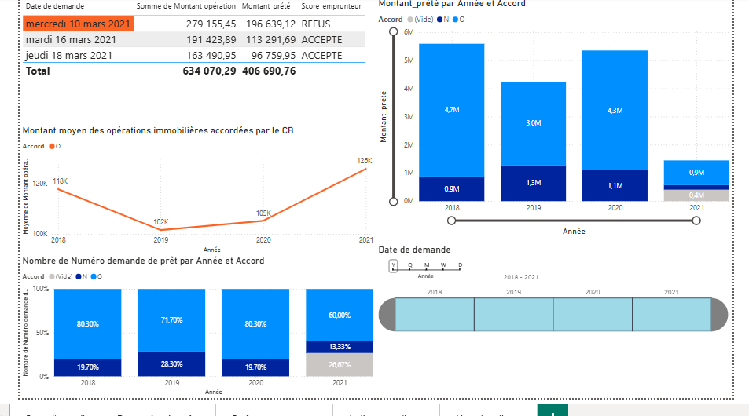
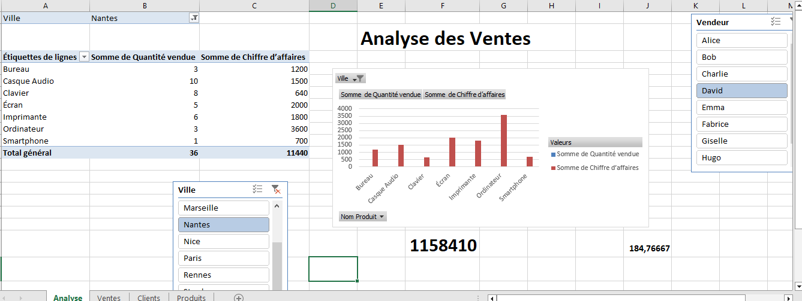

🎓 Étudiante en Master 1 Systèmes d'Information et Management de la Data, je suis passionnée par tout ce qui touche aux données : leur collecte, leur analyse et leur valorisation pour aider à la prise de décision.
🔍 Mon objectif est d’exploiter la puissance des données pour apporter des insights pertinents et optimiser les stratégies d’entreprise. J’aime manipuler des outils comme Excel, Power BI, Python et SQL pour transformer des données brutes en informations exploitables.
💡 Curieuse et rigoureuse, je suis toujours en quête de nouvelles compétences en data analysis, business intelligence et machine learning. À travers ce portfolio, je partage mes projets et réalisations dans l’univers de la data.
📩 N’hésitez pas à me contacter pour échanger sur des opportunités ou des collaborations !
Voici quelques projets que j’ai réalisés en analyse de données, Power BI, Excel et Python. Vous pouvez consulter les détails et le code sur GitHub.
Un tableau de bord interactif permettant d’analyser les demandes de prêts immobiliers, d’évaluer les risques et d’aider à la prise de décision dans une banque.
 Voir le projet sur GitHub Télécharger le fichier Power BICe projet consiste à analyser les demandes de prêts immobiliers en utilisant des données sur les emprunteurs. Le modèle de Machine Learning prédit la probabilité d'acceptation ou de refus des prêts, tout en fournissant des alertes sur les montants élevés pour le directeur d'agence. Les outils utilisés incluent pandas, scikit-learn et matplotlib.
Lancer le notebook interactif sur Binder Voir sur GitHubUn tableau de bord interactif permettant d’analyser les performances des ventes, les tendances et les produits les plus rentables grâce à Excel.
 Voir sur GitHubN’hésitez pas à me contacter pour échanger sur des opportunités ou des collaborations.